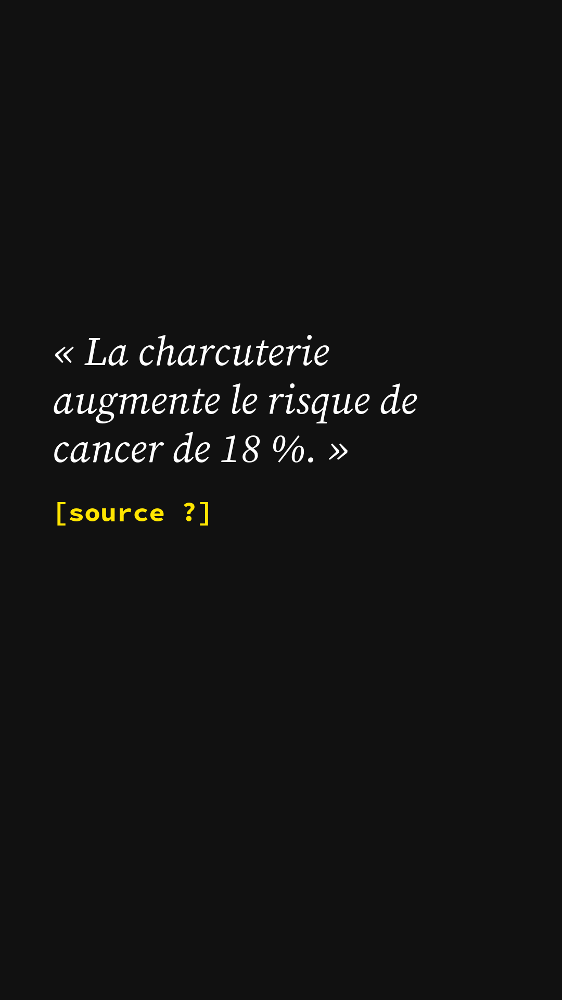
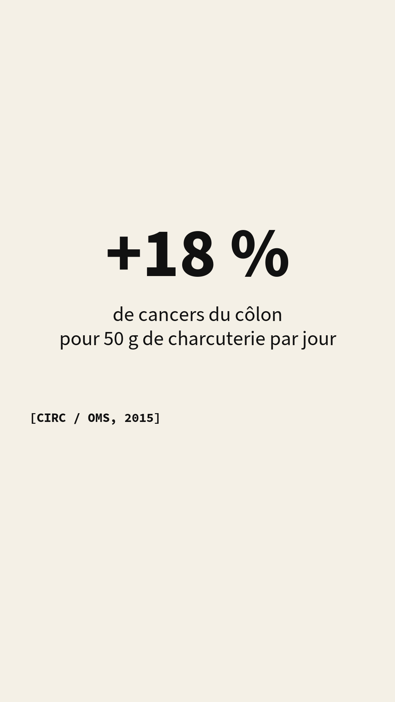
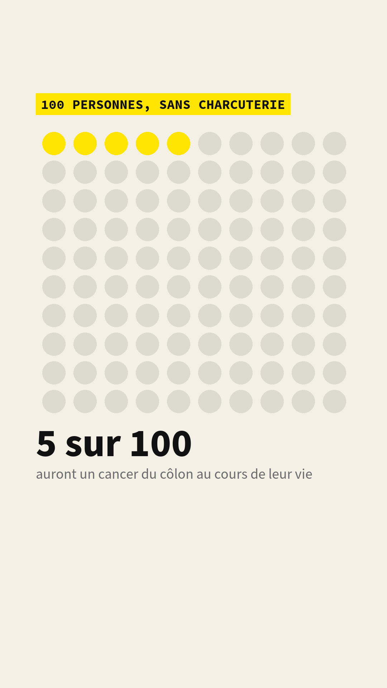
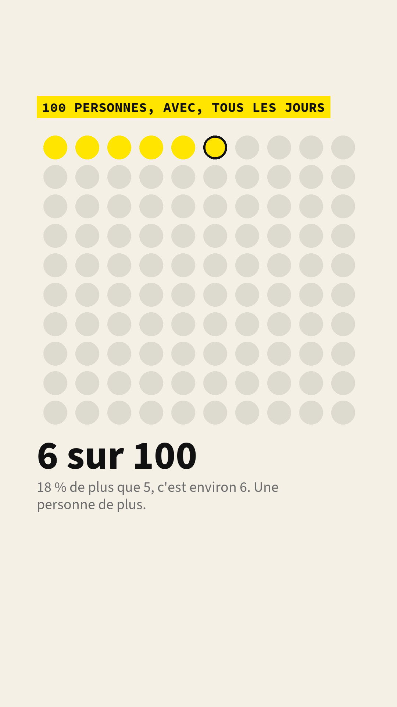
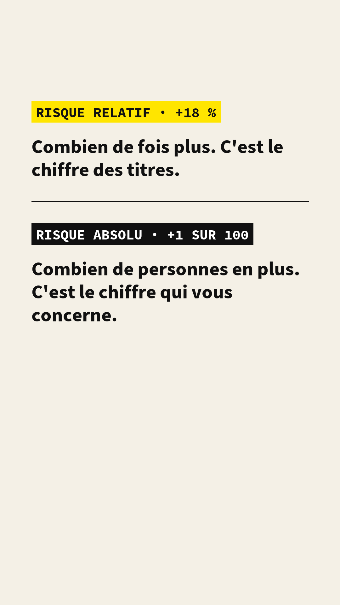
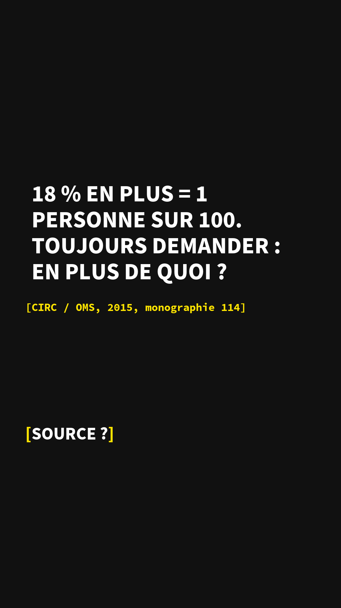

pilote
Cette vidéo sert à tester le format, le tournage et le montage. Elle n'est pas publiée sur les réseaux. Les chiffres marqués à vérifier viennent d'une première lecture et sont en cours de vérification à la source ; ils seront corrigés ici et dans le script si besoin.
1En une phrase
| La question | « 18 % de risque en plus », ça représente combien de personnes ? |
|---|---|
| La réponse | Environ une personne sur cent. Le pourcentage dit combien de fois plus ; le nombre de personnes dit ce que ça change. |
| Avec | Hanna Bony · économiste |
| Source principale | CIRC / OMS, 2015, monographie 114 |
| La limite | Un sur cent n'est pas rien à l'échelle d'un pays ; c'est pour une décision individuelle que le chiffre absolu compte. |
| Thème | Comprendre les chiffres · Les bases, épisode 9 |
| Notion | Risque relatif et risque absolu |
2La transcription
Le texte dit dans la vidéo, mot pour mot, avec le moment et ce qui est à l'écran.
La charcuterie augmente le risque de cancer de 18 %. Ce chiffre fait peur. Et il est vrai. Mais 18 % de quoi ?
(son du carton)
Ce chiffre vient de l'agence du cancer de l'Organisation mondiale de la santé. Manger 50 grammes de charcuterie par jour, à peu près deux tranches de jambon, est associé à 18 % de cancers du côlon en plus. 18 % en plus, par rapport aux gens qui n'en mangent pas.
Prenons 100 personnes qui ne mangent pas de charcuterie. Au cours de leur vie, environ 5 auront un cancer du côlon.
Maintenant, 100 personnes qui en mangent tous les jours. 18 % de plus que 5, ça fait environ 6. Une personne de plus, sur cent.
Les deux chiffres sont vrais. « 18 % en plus », c'est le risque relatif : combien de fois plus. « Un sur cent », c'est le risque absolu : combien de personnes en plus. Le premier fait les titres. Le second dit ce que ça change pour vous.
Attention, ça ne veut pas dire que c'est rien. Un sur cent, à l'échelle d'un pays, c'est beaucoup de monde. Mais pour décider ce que vous mangez, c'est le deuxième chiffre qu'il vous faut.
Donc la prochaine fois qu'un chiffre monte de 18 %, demandez : en plus de quoi ?
La légende publiée avec la vidéo. « 18 % de risque en plus », c'est combien de personnes ? Environ une sur cent : le pourcentage dit combien de fois plus, pas combien de personnes. Avec : Hanna Bony, économiste. Source : CIRC/OMS, monographie 114, 2015, lien.
3Ce qu'elle montre, ce qu'elle ne montre pas
- Qu'un même résultat peut s'exprimer en risque relatif (« 18 % en plus ») ou en risque absolu (« une personne sur cent »), et que les deux sont justes.
- Que le chiffre relatif ne dit rien tant qu'on ne connaît pas le risque de départ.
- Que la vidéo dit « est associé à », pas « provoque » : elle décrit une association, pas un mécanisme.
- Que le risque serait négligeable : un sur cent, à l'échelle d'un pays, c'est beaucoup de monde.
- Comment la charcuterie agit sur le côlon, ni ce qui se passe à d'autres doses que 50 g par jour.
- Ce qu'il faut manger : la vidéo donne le chiffre qui sert à décider, pas la décision.
4Les sources
Les articles et rapports cités, avec le lien vers le document d'origine.
- Centre international de recherche sur le cancer (CIRC, en anglais IARC), agence de l'Organisation mondiale de la santé, communiqué de presse n° 240, « IARC Monographs evaluate consumption of red meat and processed meat », 26 octobre 2015. C'est le texte d'où vient le « 18 % par portion de 50 g par jour ». Communiqué (PDF, en anglais) · page de l'évaluation, avec le document questions-réponses.
- Bouvard V., Loomis D., Guyton K. Z., Grosse Y., El Ghissassi F., Benbrahim-Tallaa L. et co-auteurs, pour le groupe de travail du CIRC, « Carcinogenicity of consumption of red and processed meat », The Lancet Oncology, vol. 16, n° 16, 2015. Le résumé de l'évaluation, publié le jour du communiqué. doi.org/10.1016/S1470-2045(15)00444-1
- CIRC, Monographie 114 : Red Meat and Processed Meat, 2018. Le rapport complet, qui passe en revue plus de 800 études. monographs.iarc.who.int, volume 114.
- Risque de cancer colorectal en France : Santé publique France, Institut national du cancer et réseau Francim, estimations nationales de l'incidence 2023. Page de données : santepubliquefrance.fr, cancer du côlon-rectum · cancer.fr, épidémiologie des cancers du côlon-rectum · Bulletin épidémiologique hebdomadaire, estimations 2023.
5Les données et les calculs
Les bases de données utilisées
- Les études rassemblées par le CIRC : le 18 % vient d'une synthèse d'études de cohortes (des dizaines de milliers de personnes suivies pendant des années), reprise dans la monographie 114. Ce ne sont pas des données téléchargeables ; les études sont listées dans la monographie.
- Les registres des cancers (réseau Francim) et les estimations nationales de Santé publique France, d'où doit venir le risque de base. Les indicateurs par région sont consultables sur Géodes, l'observatoire de Santé publique France.
Nos calculs, à télécharger
- video-2-risque-relatif-absolu.csv : le passage de « 18 % en plus » à « une personne sur cent », ligne par ligne.
| Chiffre | Valeur dans la vidéo | Statut |
|---|---|---|
| Hausse du risque de cancer colorectal associée à chaque portion quotidienne de 50 g de viande transformée (risque relatif) | + 18 % | à vérifier : relire le « par 50 g par jour » dans le communiqué n° 240 |
| Risque de base : cancer colorectal au cours de la vie, en France (risque absolu) | environ 5 sur 100 | à vérifier : prendre le risque cumulé 0-74 ans de Santé publique France ; si c'est plutôt 4, dire « 4 et 5 » et changer la grille des écrans 03 et 04 |
| Risque avec exposition | 5 × 1,18 = 5,9, dit « environ 6 » | calcul |
| Personnes en plus, sur cent | 5,9 − 5 = 0,9, dit « une personne » | calcul |
Les écrans 03 et 04 sont une grille de cent personnes : cinq en jaune sans charcuterie, six avec. Ils illustrent le calcul ci-dessus ; ils ne sont pas tirés d'une étude.
6Les écrans
Les images posées sur la vidéo, générées à partir de la charte graphique. Format vertical 1080 × 1920.







7Relecture et validation
| Étape | Qui | Statut |
|---|---|---|
| Écriture du script | Hanna Bony | fait |
| Relecture scientifique | à compléter | en cours |
| Relecture éditoriale | à compléter | en cours |
| Validation technique (sous-titres, habillage, sources à l'écran) | à compléter | en cours |
| Accord du chercheur sur la version montée | Hanna Bony | en cours |
8Corrections
Aucune correction pour l'instant. Une erreur ? Signalez-la.